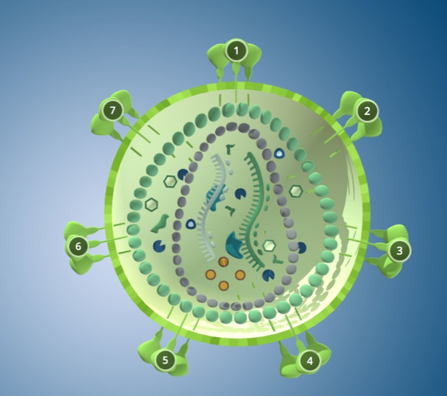

1. Kompleks
Virus kompleks memiliki struktur yang terdiri dari kepala polihedral dan ekor seperti serabut. Contohnya adalah bakteriofag.
2. Spherical (Bulat)
Bentuk bulat dengan lapisan lipid, sering ditemukan pada virus hewan seperti virus influenza dan HIV.
3. Filamen
Bentuk memanjang seperti benang. Contoh: virus Ebola. Memiliki fleksibilitas dalam menyerang sel inang.
4. Heliks
Struktur berbentuk spiral dengan RNA atau DNA yang dililit oleh protein kapsid. Contohnya: virus TMV.
5. Polyhedral
Bentuk geometri simetris seperti icosahedron. Contoh: adenovirus. Stabil dan efisien dalam menginfeksi.
6. Rod-shape

Bentuk batang lurus yang kaku. Contohnya adalah virus mosaik tembakau (TMV), menyerang tanaman.